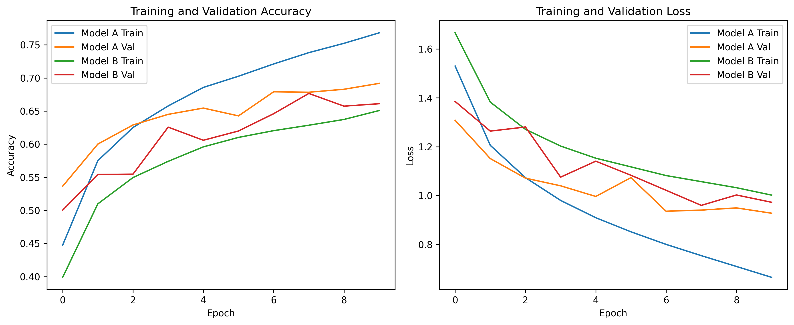
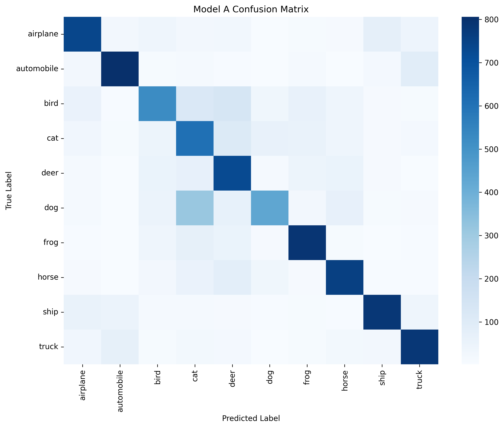

Summative Assessment:
Individual Presentation
Task
The assessment was a 20-minute CIFAR-10 object-recognition presentation. My route was Track 2: CNNs and data augmentation.
Project Summary
I compared two CNN models using a 40,000 / 10,000 / 10,000 split. Model A was selected because it had the stronger validation and test accuracy, while also producing the lower test loss. The result supported a clear final model choice for the presentation rather than relying only on architecture description.
| Model | Validation accuracy | Test accuracy | Test loss |
|---|---|---|---|
| Model A | 0.6918 | 0.6945 | 0.9281 |
| Model B | 0.6611 | 0.6616 | 0.9674 |
Comparison with Unit 6 Direction
The Unit 6 team project used Airbnb pricing data and combined regression with K-means segmentation. Its focus was broad: clean the dataset, compare linear regression, ridge regression, and random forest, then use clustering to explain listing groups.
The Unit 11 project was narrower but deeper. Instead of comparing several business-analysis methods, I evaluated two CNN models on CIFAR-10 using the same 40,000 / 10,000 / 10,000 split. Model A was stronger than Model B on validation accuracy, test accuracy, and test loss, so the final choice was based on measured performance rather than model description alone.
Evidence


Learning Outcomes
Supports LO3 through critical evaluation of a CNN model.